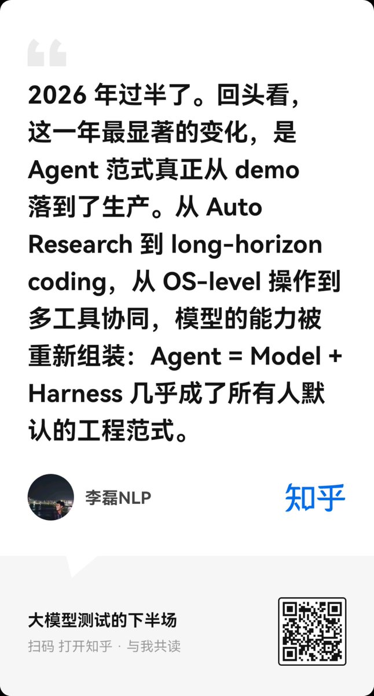
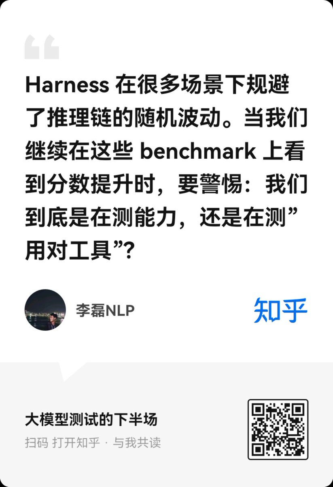
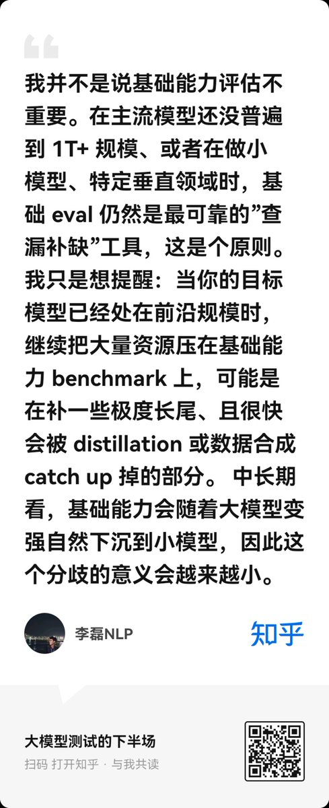
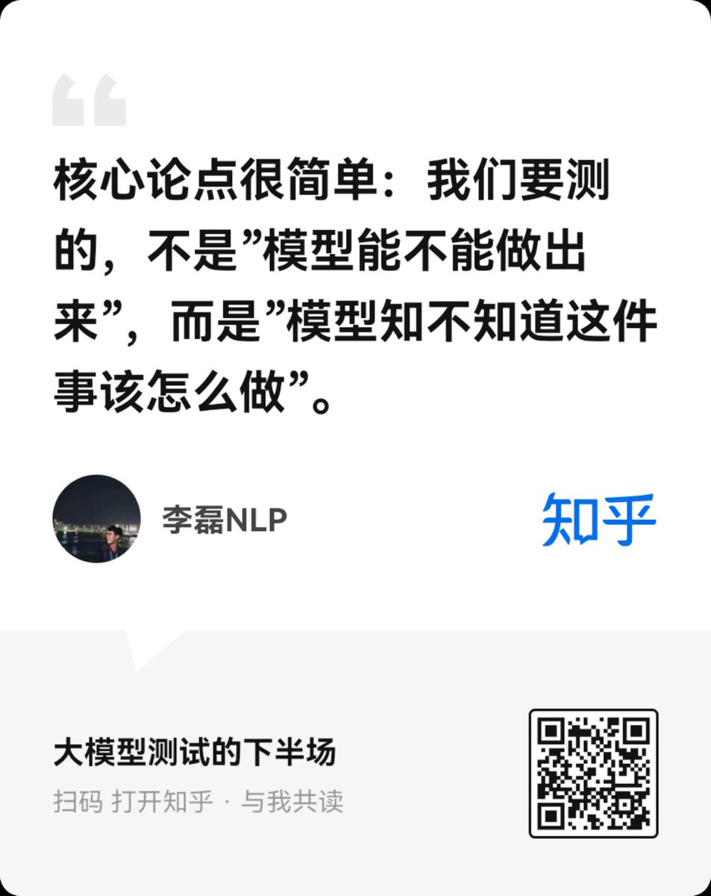

2. 作者到底想解决什么问题
作者的问题意识可以概括为一句话：我们正在用单轮问答时代的尺子，衡量一个由模型、工具、环境、执行器和验证器共同组成的新系统。
传统 LLM eval 的隐含对象通常是“裸模型”：给一个 prompt，看它能否在内部知识和内部推理里生成答案。但 Agent 系统的对象变了：它不是只有模型权重，还有 system prompt、检索工具、代码执行器、浏览器、文件系统、shell、外部 API、测试环境、trajectory 记录和验证器。这就是原文说的 Agent = Model + Harness。
一旦对象变了，评测目标也会变。过去问“模型知道不知道 X 公司营收”，现在更应该问“模型能否意识到这是时效性问题，应该联网查，并且交叉验证来源”。过去问“模型能不能心算复杂概率”，现在更应该问“模型能否判断这个问题更适合写程序模拟或符号求解”。
它不只是输出排行榜，而是告诉我们模型在哪类环境、哪类路径、哪类工具选择上稳定，在哪些地方会失败。
step-level scoring、trajectory analysis、LLM-as-a-judge、机器可验证状态等，都是比单点分数更长期的工程进展。
OSWorld 和 SWE-Bench 的价值不只是难题，而是告诉社区“模型可以被放进真实操作环境和代码仓库里做事”。
我的理解：这篇文章真正强调的是“评测的对象迁移”。当对象从裸模型变成 Agent 系统时，继续只测静态知识、纯脑内推理和最终答案，就会漏掉生产系统里最关键的决策质量。
3. 为什么传统 benchmark 在前沿 Agent 场景里开始失真
作者没有简单否定传统 benchmark，而是在限定边界：当基础能力还没补齐时，传统 eval 仍然很重要；但对前沿模型和 Agent 系统来说，部分传统任务的边际价值下降了。
| 传统评测类型 | 原本测什么 | Agent 时代的失真点 | 更应该测什么 |
|---|---|---|---|
| 知识 QA | 模型参数中是否存有事实知识。 | web search 成为默认能力后，死记硬背静态知识的意义下降，尤其是时效信息。 | 是否知道该查、查哪里、如何交叉验证、如何标注时间与来源。 |
| 长链推理题 | 模型能否在自然语言链条中完成多步推导。 | 概率、组合、状态模拟等问题常常用代码更稳定；高分可能来自工具路径，而非脑内推理。 | 是否能选择直接推理、代码执行、检索、符号工具或验证流程。 |
| 函数级 coding | 补全函数、修局部 bug。 | 真实 coding agent 要读仓库、改多文件、跑测试、理解历史和依赖。 | repo-level 修改、环境构建、测试反馈、跨文件一致性和长期任务恢复。 |
4. Delegation Intelligence：不是“会用工具”，而是“知道该怎么解决”
Delegation Intelligence 可以翻译为“委派智能”。它不是鼓励模型盲目多调用工具，也不是把所有能力外包给工具，而是评估模型是否能把任务拆给合适的外部机制，并回收、验证、整合结果。
一个强工程师不会心算 2^37 * 1.0732，会用计算器；不会凭记忆回答 2026 年财报，会查公告；不会读到一半就相信个人博客，会看研究设计、样本和日期。作者说的智能，更多是这种路径选择能力。
| 维度 | 具体在测什么 | 好表现 | 坏表现 |
|---|---|---|---|
| Tool-use judgment | 什么时候调工具、调哪个工具、参数怎么设、是否需要工具。 | 时效问题联网；数值问题用代码；文件任务用 shell 和测试。 | 需要当前信息却凭训练记忆答；能直接回答却乱搜；工具参数乱猜。 |
| Information synthesis & verification | 多源信息是否加权，而不是平均。 | 优先采信官方公告、论文、RCT、代码和可复现实验；标注旧来源和弱来源。 | 把 Nature RCT、个人博客和过时综述等权平均。 |
| Path selection | 在直接推理、代码、检索、阅读、验证、人审之间选路。 | 能先判断任务形状，再选择低风险、可验证、成本合适的路径。 | 一条路走到黑；不知道何时停止；没有验证步骤。 |
这比“工具调用成功率”更严格。一个模型可以会调用浏览器，但如果它不知道什么时候应该联网，或者不知道搜索结果要按可靠性加权，它仍然缺乏委派智能。
5. Pass@k、Pass-all-k / Pass^k 和 Stability Gap
原文最有操作价值的一点，是把 Agent 可靠性从“偶尔成功”推进到“连续稳定成功”。这就是 Pass@k 与 Pass-all-k / Pass^k 的区别。
如果一个任务运行多次，只要 k 次里有一次成功，就算覆盖到了成功路径。它适合“可以筛选答案”的场景，比如代码生成里有单元测试，生成多个候选后挑一个通过的。
它关心连续 k 次独立运行是否都成功。对真实 Agent 产品更苛刻，因为用户通常不能接受“多试几次总有一次对”。
举一个直观例子：某客服 Agent 单次成功率 70%。如果给 3 次机会，Pass@3 可能看起来接近 97%，因为至少有一次成功很容易；但连续 3 次都成功的 Pass^3 只有 34.3%。这正是生产可靠性和 benchmark 乐观分数之间的落差。
这个 gap 的解释非常直接：gap 大，说明模型有时能做对，但路径不稳定，可能靠随机采样或偶然工具路径；gap 小，说明它的决策路径比较稳定。对 Agent 来说，稳定性本身就是能力，因为真实用户购买的是连续服务质量，而不是排行榜上“至少一次成功”的希望。
6. Claw-Eval 实践：结果 + 路径 + 成本 + 安全
原文用 Claw-Eval 作为实践例子。外部核验显示，Claw-Eval 官方页公开展示 Pass^3、Pass@3、Completion、Robustness、Safety、Avg Score，并给出 Pass^3 与 Token Efficiency 的散点视图。这和文章主张一致：Agent 评测不能只看最终完成，还要看稳定性、鲁棒性、安全和成本。
| 评测层 | 文章中的主张 | 为什么重要 |
|---|---|---|
| 结果正确性 | 优先使用可验证任务：单元测试、数值答案、文件 diff、API 状态。 | 减少 LLM judge 和人工主观性，让结果可复现。 |
| 路径合理性 | 记录工具调用 trajectory，并承认一题多解。 | 同样正确的答案，可能来自更安全、更低成本或更鲁棒的路径。 |
| Token Efficiency | 做对还不够，要看消耗了多少 token、工具调用和轨迹长度。 | 生产系统中成本和延迟是能力的一部分；50k token 做对和 5k token 做对不应等价。 |
| Model Instinct | 有些模型无需完整读完材料就能指出关键段落；有些必须全量搜索后才收敛。 | 这可能解释为什么两个 accuracy 相同的模型，在真实工作流中的效率和可用性差很多。 |
| Safety | Agent 会操作文件、网络和外部系统，因此安全应是一票否决维度。 | 能完成任务但会删错文件、泄露信息或调用禁用工具的 Agent，不能算强。 |
这里最值得注意的是“路径合理性”。如果评测强行规定一条黄金路径，就会把真正的智能压扁成流程复刻；但如果完全不看路径，只看最终答案，又无法区分模型是否靠偶然、过度搜索、错误工具、泄漏答案或高成本暴力试出来。好的 Agent eval 必须在这两端之间找到平衡：允许多路径，但要求路径可审计。
7. “模型直觉”为什么很重要，也为什么很难测
文章里最有前瞻性的概念是 Model Instinct。作者观察到，不同模型在 trajectory 里的“第一判断”差异很大：有的模型看论文目录就知道 method section 关键段落在哪，有的模型看代码目录就能猜到核心文件，有的模型在信息不足时的初始判断已经接近最终答案。
这不是普通 accuracy。两个模型最终都做对，一个可能是读遍所有来源才做对，另一个可能是一开始就走对路径。Token efficiency 可以部分反映这种差异，但不够精确，因为低 token 可能来自粗糙跳步，高 token 也可能来自必要验证。
- 记录第一轮计划是否命中最终有效路径。
- 统计无效工具调用比例。
- 比较早停版本与完整运行版本的答案质量差距。
- 看模型是否能在证据不足时表达正确不确定性，而不是过早自信。
- “直觉”可能是训练集泄漏或 benchmark 熟悉度。
- 工具和检索索引质量会干扰模型自身判断。
- 过度奖励快速路径可能惩罚必要的安全验证。
- 不同 harness 的 prompt 和工具描述会显著改变第一判断。
我的判断是：Model Instinct 值得测，但不应该被神秘化。它可以被拆成可操作变量：第一计划命中率、无效探索成本、早期证据定位能力、错误自信率、路径修正速度。真正有用的不是给“直觉”起一个漂亮名字，而是把它还原成 trajectory 里的可统计行为。
8. 这篇文章的局限与容易误读的地方
不对。作者明确保留边界：小模型、垂直模型、基础能力查漏补缺仍需要传统 eval。问题只是前沿 Agent 的主战场不应停留在旧题型。
也不对。Delegation Intelligence 不是工具数量，而是选择策略。乱搜、乱跑代码、乱调 API 只会提高成本和风险。
Pass^k 衡量连续成功，但仍需要看任务分布、环境稳定性、安全 veto 和成本。单一指标不能代表完整能力。
文章反而提醒我们，harness mismatch 会严重影响横向比较。同一个模型换工具集、prompt 或执行环境后，表现可能大幅变化。
还有一个更深的限制：Agent eval 的复现性很难。web search 结果会漂移，模型 endpoint 会限流，browser 自动化会卡住，容器资源会变化。此时评测样本不是“题目 + 答案”，而是“题目 + 环境快照 + harness + 工具状态 + trajectory + 最终状态”。缺任何一项，分数都可能难解释。
9. 我的核心 insight
这篇文章真正有价值的地方，是把“智能”从静态能力重新定义为动态资源调度：知道什么时候依赖参数，什么时候依赖工具，什么时候依赖证据，什么时候依赖验证。
在单轮问答时代，我们习惯把模型看成一个“答案生成器”。因此 eval 的自然形态是：题目、标准答案、正确率。Agent 时代更像把模型放进一个工作系统里，模型要决定：要不要查？查什么？信谁？要不要写代码？代码结果怎么验证？工具失败怎么办？成本是否过高？是否触碰安全边界？
所以，评测也要从“答案评测”升级到“决策过程评测”。这不意味着最终答案不重要，而是最终答案必须和路径、稳定性、成本、安全一起看。否则我们会奖励两类错误能力：一类是偶然成功，一类是高成本暴力成功。
如果要把这篇文章变成实际评测设计，我会落到五个字段：final correctnesspath auditabilityrepeated reliabilitycost efficiencysafety veto。这五个字段加起来，才更接近 Agent 在生产里真正要交付的能力。
证据边界与资料索引
这条 X 帖不是完整论文式 thread，而是一条英文导读。它最关键的信息藏在短链里：短链解析到知乎文章《大模型测试的下半场》。因此解读重点应该放在“X 摘要 + 知乎原文 + Claw-Eval 指标背景”的三角关系上。
ZhihuFrontier/status/2056408194801635391
原帖包含四张图卡和短链，定位为 Part 1；Part 2 未包含在该状态中。
本文的主要论证来自知乎原文；X 原帖主要承担导读和索引作用。
Claw-Eval 页面确认指标包括 Pass^3、Pass@3、Completion、Robustness、Safety、Avg Score。
Pass@k / Pass^k 解释参考 Phil Schmid 与 Hippocampus's Garden。



